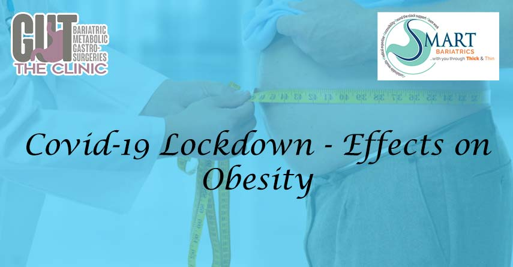

The Impact of COVID-19 Lockdown: How It Affects Obesity and Weight Management
Impact of Covid-19 Lockdown: Effects on Obesity
Due to absence of mass immunity and effective treatment against COVID-19, most nations are forced to go into lockdown of their cities as a public health measure to control the spread of virus thus ensuring safety of their citizens.Obesity and Increased Vulnerability to COVID-19
As a practicing bariatric dietician, I am equally worried about the health risk of our obese population and for patients who have underwent weight loss surgery, so would like to share some facts on how they are more susceptible to the corona virus infection and its complications as compared to non-obese population. Obesity is the root cause of many metabolic health issues like diabetes, high blood pressure, heart disease, and many types of cancers. Obesity also affects nutritional status by giving birth to many nutritional deficiencies in the body which ultimately alters immune response and weakens immunity. Hence, obese people, especially those with BMI >40kg/m2 need to be more careful during the lockdown about their health by not gaining weight. It is generally seen from various scientific studies that people with obesity get reduced protection from vaccination, which necessitates more care for such a population.Challenges of Lockdown on Weight Management
Lockdown is necessary to stay safe, but it may exacerbate existing obesity. The unwanted alteration in daily routine may make you lenient and lazy, which may badly interfere with your weight loss goals. The effects on obesity during lockdown can be significant, as the lack of physical activity and changes in eating habits can worsen the condition. Most likely for the first time in the past, all recreational facilities such as gyms, swimming pools, parks, and outdoor play areas, adventure parks, etc., have been shut down to safeguard people from the virus. This has created boundaries for people to continue with their exercise regime, and the comfort and relaxation of being at home with family may induce people to eat carelessly, further impacting their obesity.Maintaining a Healthy Routine During Lockdown
Taking care of your weight is a great matter of concern at this time as behavioral therapy, physical activity and healthy eating are at risk of being ignored. Obese people with comorbidities like diabetes, hypertension, dyslipidemia, sleep apnea, etc. should prevent even a minor weight gain. As increased vulnerability to infection and lack of routine connect to the healthcare may contribute to the new health issues in the near future. Having a structured routine and eating mindfully is important to strengthen the immunity during this pandemic. It is important to stay positive, sleep well, exercise and stay stress free to enhance your well-being.Tips for a Structured and Healthful Lockdown
Following are some tips to spend structured, healthful days during lockdown:
-
_x0001_
- Keep up to an exercise program while at home, include walking in your balcony or terrace or on your treadmill, do yoga, aerobics, stretching exercises with therabands, dance or zumba, etc. 30 to 45 minutes a day to increase your metabolism. _x0001_
- People with limited space in the house can do spot walking, spot jogging, and floor exercises. _x0001_
- Walk while you are on a phone call, avoid sitting. _x0001_
- Maintain your regular meal pattern of 3 main meals and 2 to 3 healthy, low-calorie snacks. _x0001_
- Don’t munch in between meals, this may increase your calorie intake. _x0001_
- Watch your portion sizes. Patients who have undergone bariatric surgery must use bariatric utensils, other may use small-size utensils to control meal portions. _x0001_
- As we all are bound to be less active, cut on your carbohydrate intake to balance energy intake. Consume more of protein based foods like skimmed milk and milk products, pulses and legumes, sprouts, well cooked egg whites, nuts like almonds or walnuts, fresh summer salads, homemade soups and low calorie beverages like buttermilk, green tea, green coffee, coconut water and lemon water to stay fit. _x0001_
- Non-vegetarians may eat well-cooked chicken and seafood. _x0001_
- Stick to roasted, boiled, baked, and grilled low-fat food items. _x0001_
- Keep a gap of 3 to 4 hours between meals and snacks. _x0001_
- Consume 2 to 2.5 lts. liquid a day, preferably water. _x0001_
- Keep a track of your weight. _x0001_
- Include immunity boosters like amla, turmeric, ginger, tulsi, and citrus fruits in abundance in your daily diet to build your immunity. _x0001_
- People with diabetes, high blood pressure and other comorbidities stay in touch with your doctor through phone calls and keep monitoring more often. _x0001_
- Do not smoke and drink alcohol. _x0001_
- Take your nutritional supplements regularly. _x0001_
- Meditate to make mindful choices. This will also help you to stay positive, relax, and sleep well.